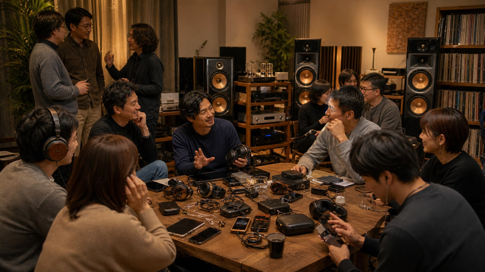

十二流派診断

交談流

家元：談機軒（だんきけん）
"交談流とは、機材と音源を人と語るための媒介とみなし、知識と趣味と立場を交わすことに本義を置く共同の道です。"
交談流の言葉
交談流において、オーディオは対話のための共通言語である。良い音に出会ったとき最初に浮かぶのは「誰かに聴かせたい」という衝動であり、好きな機材について語れる相手の存在が、この趣味の喜びを倍増させる。一人で完結する趣味ではなく、共に楽しむ文化として音楽を捉える。

レビュー動画を見て語り、SNSで発見を共有し、オフ会で実機を持ち寄り聴き比べる。機材選びにおいても、人からの評判や体験談が重要な判断材料になる。交談流の修行者は、情報と感動を循環させることで、オーディオコミュニティ全体を豊かにしている。
向く環境は、友人や仲間が集える試聴部屋、あるいはヘッドホン祭やオーディオイベントへの参加。人との繋がりの中で趣味を磨く者の流派である。